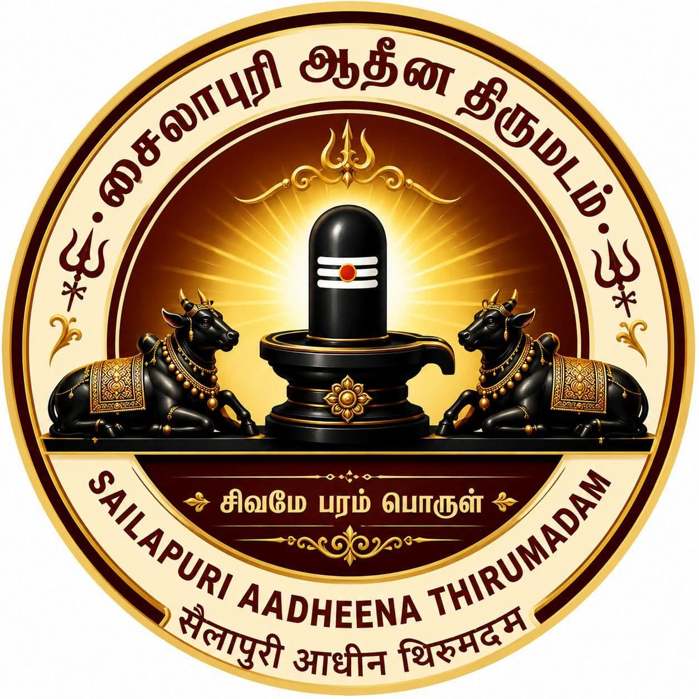

சைலாபுரி ஆதீன திருமடம்
சைலாபுரி ஆதீன திருமடம் என்பது சனாதன இந்து தர்மம், சைவ சித்தாந்தம், வேத-ஆகம மரபு, குருபரம்பரை ஞானம் ஆகியவற்றை பாதுகாத்து வளர்க்கும் நோக்கில் இயங்கி வரும் ஆன்மீகத் திருமடமாகும்.
இந்த திருமடம், இறைபக்தி, தர்மநெறி, ஆலய மரபுகள், யாக-யஜ்ஞங்கள், ஆன்மீக உபதேசங்கள், சமூக சேவைகள் ஆகியவற்றின் மூலம் மக்களிடையே நல்லெண்ணம், இறைநம்பிக்கை மற்றும் ஒழுக்க வாழ்வை நிலைநிறுத்தும் பணிகளை மேற்கொண்டு வருகிறது.
திருமடத்தின் முக்கிய நோக்கங்கள்:
- ✓ சனாதன தர்ம பாதுகாப்பு
- ✓ சைவ சமய வளர்ச்சி
- ✓ ஆலய மரபுகள் மற்றும் ஆகம வழிபாட்டு பாதுகாப்பு
- ✓ சமுதாய நல்லிணக்கம் மற்றும் தர்ம சேவை

Our Spiritual Head
ஸ்ரீலஸ்ரீ ஈசான தேசிக பரமாச்சாரிய சுவாமிகள்
நமது சுவாமிகள் சிவபெருமானின் சத்யோஜாத முகத்தில் தோன்றிய தேவலரின் வழித்தோன்றல் ஆவார். சிறுவயதில் இருந்தே அறநெறி கல்வியும் வேத நெறிக்கல்வியையும் பெற்றவர். பத்து வயதிலிருந்து ஆலயத்தொண்டும் ஆண்டவன் சேவையும் சமுதாயப் பணிகளையும் செய்து வந்தவர்.
அனைத்து மக்களும் பயன்பெற வேண்டி ஜாதி மடங்களை கடந்து சைலாபுரி ஆதீன பீடத்தை நிறுவி சைவப் பணியும் சமயப் பணியையும் ஒருங்கிணைத்து ஆயிரத்திற்கும் மேற்பட்ட பூசாரி பெருமக்களுக்கும் மாணவர்களுக்கும் ஆகம வேத பூஜை நெறிகளை கொடுத்தவர்.
Read More